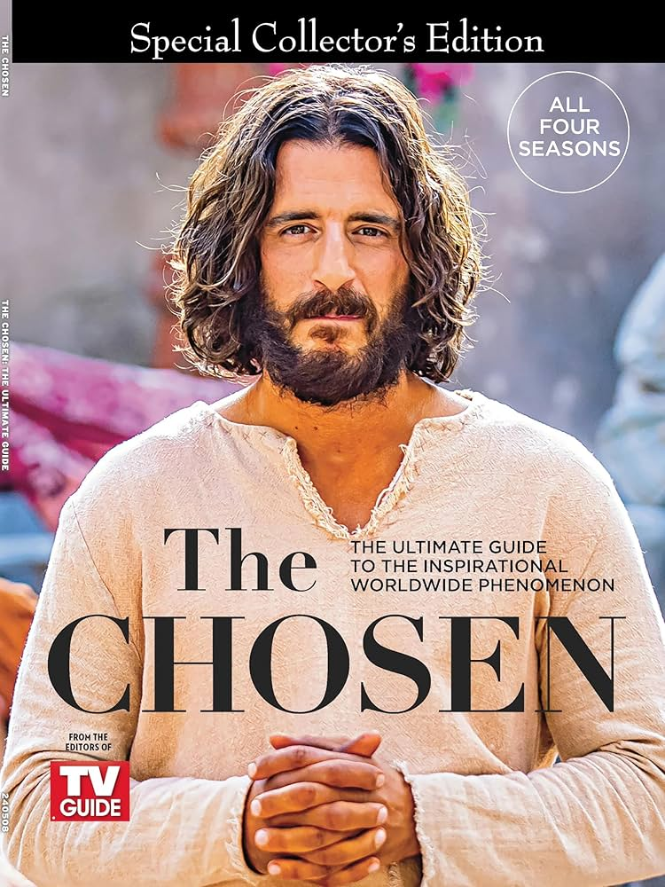

A série traz inúmeros benefícios...
The Chosen é uma ótima maneira de se conectar com a história e a tradição cristã. Ela ajuda a trazer a história de Jesus Cristo à vida de uma maneira emocionante e envolvente, permitindo as pessoas se conectarem com a sua fé de uma maneira mais profunda e significativa.
- The Chosen é uma série original que conta a história dos evangelhos de uma maneira única e envolvente. É uma das primeiras a ser bancada por meio de financiamento coletivo. Isso por si só demonstra a grande expectativa existente em torno dela.
- O enredo é baseado em eventos históricos reais. Isso se traduz em uma excelente maneira de aprender sobre a vida e os ensinamentos de Jesus Cristo de forma precisa e autêntica.
- É uma das poucas atrações de televisão com o objetivo de transmitir uma mensagem positiva e inspiradora ao público. Ela demonstra, mesmo em tempos difíceis, o quanto a fé e a esperança podem nos ajudar a superar os desafios da vida.
- A série é muito bem produzida, com atuações excepcionais e uma trilha sonora emocionante. A qualidade da produção é um reflexo do cuidado e do comprometimento da equipe em contar a história de Jesus de uma maneira autêntica .
- Não é apenas uma história religiosa. É um conto da humanidade e a jornada de cada indivíduo em encontrar o seu lugar no mundo. Ela mostra que, independentemente da nossa fé, todos nós podemos encontrar significado e propósito em nossas vidas
- A atração é acessível a todos os públicos, independentemente da sua religião ou crença pessoal. Por não pregar uma seita apenas, mas sim uma história sobre a vida de Jesus Cristo e as pessoas que o cercavam.
| AVALIAÇÕES DO PÚBLICO (2431 pessoas) | ||||
|---|---|---|---|---|
| 5 estrelas | 4 estrelas | 3 estrelas | 2 estrelas | 1 estrelas |
| 2412 pessoas | 0 pessoas | 4 pessoas | 5 pessoas | 10 pessoas |